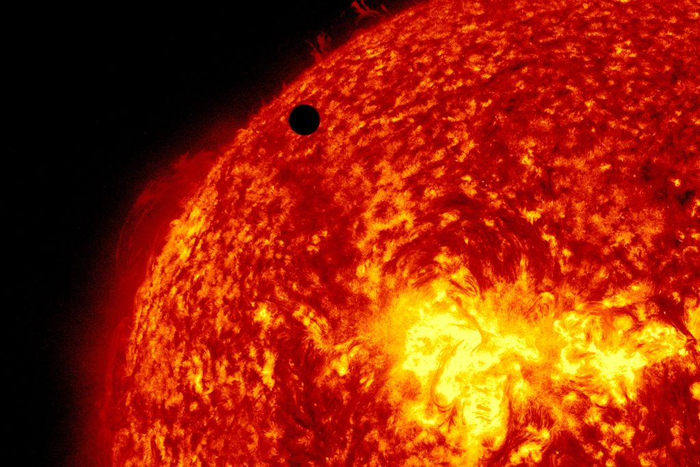

Stars and the Solar System
Want to know more about the universe? Keep reading our blog to take a deep dive into our ravishing universe.
Want to know more about the universe? Keep reading our blog to take a deep dive into our ravishing universe.
The universe is everything. It includes all of space, and all the matter and energy that space contains. It even
includes time itself and, of course, it includes you.
Earth and the Moon are part of the universe, as are the other planets and their many dozens of moons. Along with
asteroids and comets, the planets orbit the Sun. The Sun is one among hundreds of billions of stars in the Milky
Way galaxy, and most of those stars have their own planets, known as exoplanets.
The Milky Way is but one of billions of galaxies in the observable universe — all of them, including our own,
are thought to have supermassive black holes at their centers. All the stars in all the galaxies and all the
other stuff that astronomers can’t even observe are all part of the universe. It is, simply, everything.
The Solar System[c] is the gravitationally bound system of the sun and the objects that orbit it. It formed 4.6
billion years ago from the gravitational collapse of a giant interstellar molecular cloud. The vast majority of
the system's mass is in the Sun, with most of the remaining mass contained in the planet Jupiter.

The four inner system planets—Mercury, Venus, Earth and Mars—are terrestrial planets, being composed primarily of
rock and metal.
The four giant planets of the outer system are substantially larger and more massive than the terrestrials. The
two largest, Jupiter and Saturn, are gas giants, being composed mainly of hydrogen and helium; the next two,
Uranus and Neptune, are ice giants, being composed mostly of volatile substances.
Click on the given buttons to know more about these planets -
Stars are the most widely recognized astronomical objects, and represent the most fundamental building blocks of galaxies. The age, distribution, and composition of the stars in a galaxy trace the history, dynamics, and evolution of that galaxy. Moreover, stars are responsible for the manufacture and distribution of heavy elements such as carbon, nitrogen, and oxygen, and their characteristics are intimately tied to the characteristics of the planetary systems that may coalesce about them. Consequently, the study of the birth, life, and death of stars is central to the field of astronomy. Our Sun is also a star. Click on this button to know more about the Sun
Stars are born within the clouds of dust and scattered throughout most galaxies. A familiar example of such as a dust cloud is the Orion Nebula. Turbulence deep within these clouds gives rise to knots with sufficient mass that the gas and dust can begin to collapse under its own gravitational attraction. As the cloud collapses, the material at the center begins to heat up. Known as a protostar, it is this hot core at the heart of the collapsing cloud that will one day become a star. Three-dimensional computer models of star formation predict that the spinning clouds of collapsing gas and dust may break up into two or three blobs; this would explain why the majority the stars in the Milky Way are paired or in groups of multiple stars.

A satellite is a moon, planet or machine that orbits a planet or star. For example, Earth is a satellite because it orbits the sun. Likewise, the moon is a satellite because it orbits Earth. Earth and the moon are examples of natural satellites. Click tis button to know more about the moon-
Thousands of artificial, or man-made, satellites orbit Earth. Some take pictures of the planet that help meteorologists predict weather and track hurricanes. Some take pictures of other planets, the sun, and other celestial bodies. These pictures help scientists better understand the solar system and universe.Still other satellites are used mainly for communications, such as beaming TV signals and phone calls around the world.

Meteorides are smaller than smaller than comets. They are mainly chucks of rocks. They may be fragments of comets or shattered asteroids. When the earth’s orbit crosses the path of a meteoroid, it falls through the Earth atmosphere. As it falls through the Earth's atmosphere, it burns up as a result of the enormous heat generated. This makes a streak of light, which is called a Meteor or a shooting star. On a clear night, we can see many meteors in an hour. Most of the meteoroid fully burn up before they reach the lower atmosphere. However, sometimes, a meteoroid does not fully burn up and hit’s the Earth’s surface as a solid piece. This is called a Meteorite.
An asteroid is a minor planet of the inner Solar System. Sizes and shapes of asteroids vary significantly, ranging from 1-meter rocks to a dwarf planet almost 1000 km in diameter; they are rocky, metallic or icy bodies with no atmosphere
These are small chunks of ice and dust that revolve around the sun. They have oval orbits and spend most of their time far away from the sun. Comets are characterized by a small solid part(called the head) surrounded by a cloud of glowing gases(called the coma). As the comet approaches the sun, the coma stretches out a long tail of over 1 million kilometers. One of the best-known comets is the Halley’s comet that comes close to the sun once every 76 years. It is named after Edmund Halley, who calculated it’s orbit.